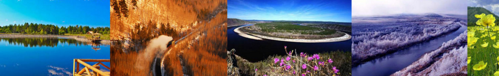

漠河景点
- 九曲十八弯
- 九曲十八弯位于加漠公路485段上，在此观景台上
可欣赏九曲弯河在苍松翠柏映衬下的瑰丽美景。九曲十
八弯自然风景区是中国最北的湿地，又是天然形成的原
生态湿地，在6-9月份的100多天里，景致壮观。早晨
3:00-9:00点登高俯视，云雾缭绕，如临仙境，心旷
神怡。到了冬季，站在观景台上举目远眺，被冰雪覆盖
的额木尔河犹如一条白色巨龙盘绕其间，岸边冰川洁白
如玉、晶莹剔透，有的像蘑菇、有的像峭壁、有的像溶
洞，尽显北国之奇、之冷、雪野之壮美，此乃大自然鬼
斧神工赐予大兴安岭的奇绝胜景。
- 北极泉
- 北极泉度假村位于漠河县图强镇木石神山之下，泉
声咽危石，日色冷青松。尝过的矿泉水清冽，便会觉得
心生清爽、烦忧远去。老北京四合院是一座古色古香的
建筑。 木质别墅，林间湖畔木屋别墅3套，为2层木质
结构建筑。生活设施齐全，是家族聚居度假的好去处。
茶楼位于北极泉水源地下游，2层木质结构建筑，设大
小茶室8间，置身其中，品茗论道，诗书歌赋，休闲至极。
- 白桦林
- 白桦林像幻想中的童话世界，美不胜收。白桦树有点
像北方的白杨，挺直、伟岸，如剑戟直向北国长天。也有
一二株、三五株长成枝桠分叉、树冠圆阔的大树的，展示
出白桦树的另一种风姿。白桦树一般与落叶松、獐子松混
生在一起。也有单独的白桦林带，公路沿线的白桦林带是
一片风景，一道道密麻麻的白灰色树干闪烁而过，有时风
起，树顶的树叶被风吹翻卷，露出叶子反面的银白色，宛
如开出半树半树的白花。
- 龙江第一湾
- 中俄界河额尔古纳河在漠河县洛古河村西北15公里处与
俄罗斯方向流过来的石勒喀河汇合后就成为黑龙江源头，滚
滚黑龙江水从这里为起点沿着内外兴安岭交界处的低谷一路
东流150公里后在一个叫红旗岭的地方突然拆成一个完美的
Ω形江湾，这个长度达30公里的神奇大湾就是黑龙江第一湾
。 江湾形成的原因自然是因为地势的变化，但做为中国第
三大河的黑龙江水量丰富，非一般的地形就能够让雄浑的江
水轻易转向，为此阻挡江水流向的一侧总会是壁立千仞、悬
崖万丈，而另一侧则地势低相对平缓许多。中国一侧的悬崖
之上则是另一番景色:山顶平缓，森林茂密。站在初转弯处
的山顶上，一幅美丽神奇的画卷展现在人们眼前：一侧飞奔
而来的一江清水在脚下缓缓转弯向北而去，在目之所及处遇
悬崖向右转向消失在天边；江对岸则是一个江水环绕的美丽
岛屿，岛上是由针阔叶混交而成的原始森林，由远及近地势
由高到低，那七彩森林好似由远方流淌而来，震撼人心灵!
江水绕过美丽岛屿形成半环状金色沙滩，于是这个美丽岛屿
就有了个响亮的名字—金环岛。
- 乌苏里浅滩
- 坐落在北纬53°33′43″的黑龙江南岸，位于大兴安
岭北端，图强林业局施业区内，是黑龙江畔的一处天然风
景区。浅滩由黑龙江冲积而成，面积约50余平方公里
，因在清朝时这里设有卡伦（相当于边防哨所）叫乌苏里，
所以才被定名为“乌苏里浅滩”。
浅滩北岸是中俄大界河——黑龙江，这里江水雄浑壮丽，
滩岸一马平川。冬季更是雪卧原野，一片银装素裹，是大
自然鬼斧神工，造就了北国这一天下奇景。
这里是中国最北点，与俄罗斯隔江相望，站在浅滩之上，
既可领略江水的雄浑壮丽，又可远眺隔江的异域风光。独
特的秀美景色，一年四季都彰显着大自然的神奇魅力。站
在驴友自制的纬度坐标之处，面朝南方，张开双臂，整个
中国都在你的怀抱之下……您找到北了吗？
- 北红村
- 北红村位于大兴安岭最北部的群山之中，其
四周均为未开发的原始森林，林木浓密，野果遍
地，小动物如野猪、狍子、雪兔、飞龙等随处可
见。需要有当地人作为向导（不然容易迷路）
。丛林中鸟叫虫鸣，在夏末，可以采摘野果，蘑菇
木耳也可以寻找野生灵芝等名贵药材。漠河北红
村、真正意义上的中国最北端、坐标比北极村还
要稍偏北！
- 北极村
- 北极村是中国黑龙江省漠河县最北的村镇，同时
也是中国最北的城镇。北极村位于北纬 53°33′30″
，东经122°20'27.14"。 北极村是中国唯一观测
北极光的最佳地点。中国“北方第一哨”北极哨所处
于北极村。北极村处于北纬53°以上的高纬度地区
，因此夏季会发生极昼现象，白天通常长达17个小时以
上，而冬季刚好相反，是北极村的一大特色。 北极村
全年平均气温在-5℃左右，冬季的极端最低气温可降
至-50℃
- 圣诞滑雪村
- 圣诞村是中国极地资源与西方圣诞文化完美融合
，与世界北极芬兰圣诞村遥相呼应。圣诞村主要包括
圣诞老人屋、圣诞邮局、圣诞老人广场、儿童童话世
界、白雪公主乐园、七个小矮人藏宝屋、驯鹿园等景
点。亚洲唯一的圣诞世界、芬兰罗瓦涅米纯正的圣诞
老人、巨型雪雕圣诞袜子、巨型冰尜、中国独有圣诞
邮局，在这里听着圣诞音乐，与圣诞老人一起融进童
话般的冰雪世界，体验原汁原味的圣诞文化，足不出
国就能享受浪漫圣诞，共同品尝极具冰雪魅力的文化
盛宴。
- 最北邮局
- 虽然它不是北极村的旅游景点，但是游客们都已
经将这里作为景点来参观。漠河乡圣诞邮局俨然已经
是北极村的标志之一。远远望去，与以往见到标准型
绿色的邮局不同，这座木头结构的欧式小楼已经让这
里充满了好奇和期待。
打开大门的那一刻，浓浓的圣诞气息已经扑面而
来。记者看到，整栋楼是按照芬兰风格建造的，屋内
挂满了各式圣诞装饰品，恐怕，这不仅仅是中国最北
邮局，也可称得上是最美邮局了。
- 最北哨所
- 北极哨所是中国人民解放军驻黑龙江省大兴安岭
地区漠河县北极村边防某连队的中俄边境了望哨，它
是中国最北部的一个了望哨。整个塔为六面柱体，楼
梯直通塔顶。塔顶面积为10平方米，可用高倍望远
镜观赏俄罗斯风光。了望塔为砖混结构，一楼及塔顶
比较宽敞，其它各层均由铁制楼梯占据。
- 观音山
- 漠河观音山林海观音奉安之后，观音山一年内三
次出现“佛光普照”的神奇景象，这种奇观的出现分别
是在2007年7月27日、7月29日和9月25日，时
间都是上午9时到10时之间，持续时间长达一个半小
时一两个小时，景观基本相同。第一次出现“佛光普
照”的时候，全国2006年度旅游统计年报汇报会的
代表恰好邂逅此观，当有人惊呼：“看那是什么？”
时，大家一齐仰望天空，只见湛蓝的天上，淡淡的白
云，一轮七彩皆备、艳丽夺目的光环如雨后彩虹，环
绕着洁白如玉、恬静高雅的观音像四周，景象极为神
奇美妙。传说中的“佛光普照”活生生地出现在现实
、云海之上和雨后，但在阳光灿烂、天上没一丝云彩
的晴朗的天空出现，尚属神奇。
- 胭脂沟
- 1877年，一位鄂伦春老人在黑龙江边葬马掘穴，发
现许多金苗，并在老沟河底捞起一把河沙，河沙中金沫几
乎占了一半，这一消息很快在俄罗斯的阿穆尔、西伯利亚
、中国的黑龙江等地传开，一个名叫谢列特金的俄国人，
亲自带着矿师到老沟河谷考察，经过鉴定，其中含纯金8
7.5%、白银7.9%，其他杂质4.6%,于是他纠集一伙俄
人越过黑龙江来中国窃采黄金,中国的大批华人也来窃采
,最多时达到一万多人,仅1883年至1884年两年就盗采2
1.9万余两，在此期间黑龙江将军文绪就多次上奏朝庭要
求自行开采，直到1887年新上任的黑龙江将军恭堂奏请
清政府主张及督办漠河金厂，清政府接受了这个建议，并
指令北洋大臣李鸿章督办，调吉林候补知府李金镛主持办
理，李金镛经过实地考察后，于1888年10月正式上山
开矿，创办漠河金厂，仅1889年清政府从这里获得黄金
达两万两，1895年获5万多两，由于李金庸的清政廉洁
，不辞辛苦，苦心经营，老沟的黄金开采达到了顶盛时
期。
- 洛古河村
- 黑龙江由南源额尔古纳河与北源石勒喀河汇合而成
，黑龙江的源头洛古河江段长200多公里，最深12米
，最浅1米，沿江两岸风光宁静秀丽。洛古河又是黑龙
江源头第一村的村名，现有农家36户，至今已有90多
年的历史。一个很小的边境村落,源于蒙古肯特山的石
勒喀河和源于中国大兴安岭西坡的额尔古纳河在洛古河
村汇流，形成黑龙江的源头。洛古河村的西面是内蒙古
，北面跨过黑龙江就是俄罗斯。河上没有桥到了每年冬
季,河面结冰后,对岸的俄罗斯的木头就通过冰面运过来
.路边一个小小的绿色罐头房就是老毛子的边境检查站
了。